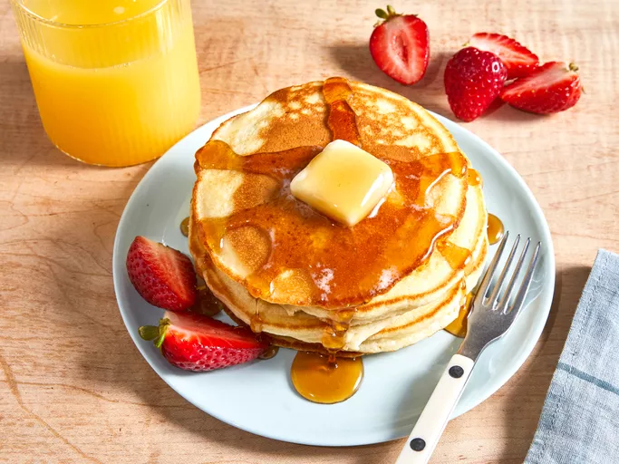

Home
Easy Pancakes

Description
This quick and easy pancake recipe puts the store-bought stuff to shame.
Pancake Ingredients
- Flour: This quick pancake recipe starts with a cup of all-purpose flour.
- Sugar: You'll need two tablespoons of white sugar.
- Baking powder: Baking powder acts as a leavening agent, ensuring perfectly fluffy pancakes.
- Salt: Salt enhances the overall flavor of the pancakes, but it won't make the pancakes taste salty.
- Milk and oil: Milk and oil add moisture and flavor to the pancake batter.
- Egg: A beaten egg lends more moisture and helps bind the batter together.
Steps
- Gather the ingredients.
- Combine flour, sugar, baking powder, and salt in a large bowl; make a well in the center. Pour in milk, oil,
and egg; mix until smooth.
- Heat a lightly oiled griddle or frying pan over medium-high heat. Pour or scoop about ¼ cup batter per
pancake onto the griddle; cook until bubbles form and the edges are dry, 1 to 2 minutes. Flip; cook until
browned on the other side. Repeat with remaining batter.
- Serve hot and enjoy!